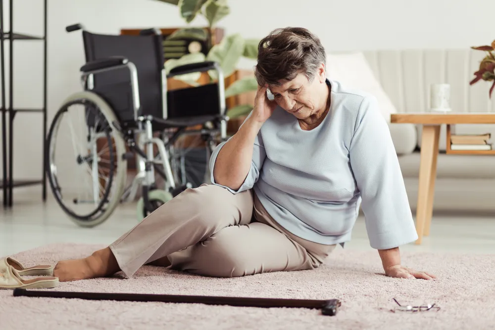

Common Causes of Falls in Seniors

One of the biggest causes of disability and hospital admissions amongst seniors is a result of falls. Some might assume that falling is a natural part of aging and will do everything in their power to avoid these traumatic events. The good news is that falling is actually not a normal part of aging , and it’s often caused by many other factors in play. As a physiotherapist, I often get to assist seniors in working towards preventing falls and maintaining their independence.
From a physiological perspective, when someone increases in age past the age of 65, they tend to slow down, exercise less, and experience a decrease in muscle strength and size. All of these things can leave a person more susceptible to falling.
If falling is a concern, and you’re looking for ways to prevent this from happening , here are some of the most common causes of falls in seniors. This will help avoid or prevent them from happening. As always, if you’re worried about your risk of falling, please consult your doctor for a check-up.
Rugs and Loose Carpets
Loose carpeting and throw rugs are a super common cause of trips and falls in the household. This is because these rugs are typically 1- to 2-cm higher than the flooring throughout your house which makes them much easier to trip over.
Since these rugs aren’t fixed to the ground, they can bunch up and move putting people within the home at risk for slipping or falling. While it’s best to simply remove all throw rugs so the floors of your house are even, however, not every person wants to do this. Another option would be to put double sided tape to the bottom or use a non-slip mat underneath the rug.
Improper Fitting Shoes
This tripping factor is often overlooked. Some seniors will come in to see me wearing big bulky and improper fitting shoes. This is really dangerous as it can be a major tripping hazard at and outside of the home.
Wearing bulky shoes means a person has to lift their foot higher up with each step to clear the ground. If your shoes are too big, your foot will be moving around inside of them leaving you at risk of falling. Best to go and get sized up for a set of shoes that fit properly. (For more information, check out How to Choose the Right Exercise Footwear for Seniors ).
Decreased Leg Strength
As people age, they tend to slow down a bit. This means that seniors will experience a decrease in muscle strength and size. This creates a risk factor for falling because when our muscles aren’t as strong as they should be, it’ll be harder for the body to catch itself if an unexpected fall or trip occurs. This leaves a person more likely to end up on the floor and getting injured.
In order to prevent a decline in strength and fitness it’s important to maintain a regular exercise routine, even into those senior years. This is one of the most preventable causes of falling! Talk to your doctor or physiotherapist to come up with a plan on how to incorporate exercise into your daily routine and what exercises in particular can help strengthen those leg muscles .
Poor Balance
I hear this one a lot. As people age, they typically become more unsteady on their feet, making them more nervous to go out in public and on longer walks. If this applies to you, the first thing to do would be to visit the doctor and ensure nothing is going on with your inner ear function or even a local infection that could affect balance.
Once that’s cleared, book in with a physiotherapist so that they can provide a full assessment. They can also help provide some exercises that will improve balance and prevent falls. This will keep you confident on your feet for years to come! (For more information, check out this article on The Importance of Good Balance After 50 ).
Standing Up Too Fast (Postural Hypotension)
Most people have experienced this at some point and while it’s not always cause for concern, if it’s happening all the time it could be due to a condition called postural hypotension. This is basically a fancy term way of saying a person’s blood pressure didn’t have enough time to correct itself before standing which leaves a person dizzy and unsteady on their feet.
To avoid this feeling, make sure to drink plenty of water during the day and take your time when standing after sitting, especially if moving from a low surface like a couch. It’s important to prepare the body first before standing to avoid any risk of falling.
Medication (Polypharmacy)
Another commonly overlooked factor when it comes to falling among seniors is medication. As people age, they tend to take more medication to ensure they stay fit and healthy. While these medications are necessary, sometimes they might not work well together and can end up making a person feel dizzy and unsteady on their feet.
If this is happening, talk to your doctor immediately to find a different solution. They can review all of your medications to ensure that you’re taking everything correctly and that you’re on the correct medications for your situation.
Source: https://activebeat.com/your-health/common-causes-of-falls-in-seniors/